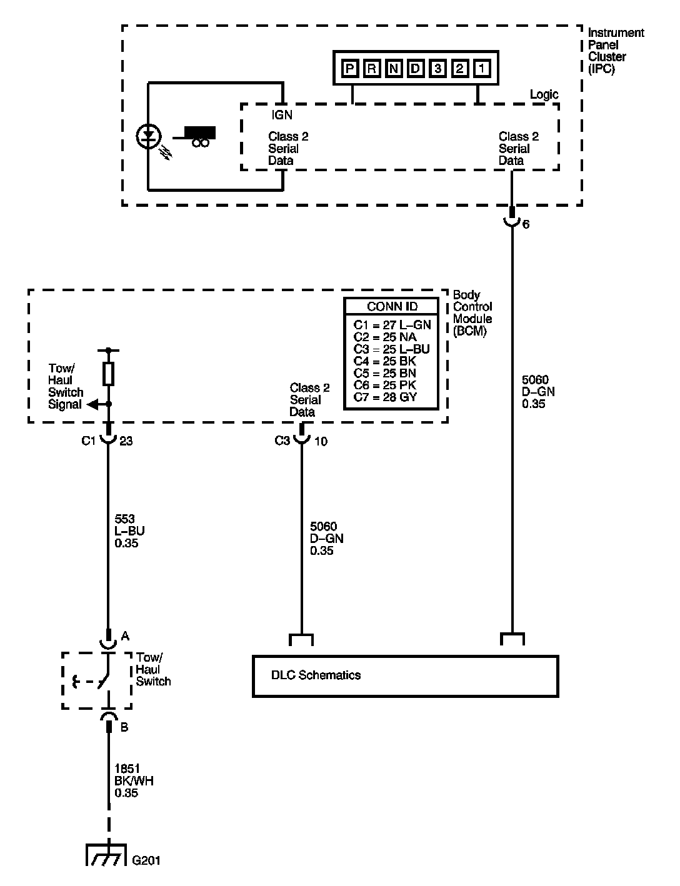

Tow/Haul Switch/Indicator Always On or Inoperative
Tow/Haul Switch/Indicator Always On or Inoperative

Circuit Description
Tow/haul mode enables the operator to achieve enhanced shift performance when towing or hauling a load. When tow/haul mode is selected, the tow/haul switch input signal to the body control module (BCM) is momentarily toggled to zero volts. This signals the transmission control module (TCM) to extend the length of time between upshifts and increase transmission line pressure. Cycling the tow/haul switch again disables tow/haul mode and returns the transmission to a normal shift pattern.
Diagnostic Aids
If the electrical circuit checks are OK and the tow/haul shift pattern is not occurring, there may be a mechanical/hydraulic condition that prevents tow/haul operation. Refer to Symptoms - Automatic Transmission. - Symptoms - Automatic Transmission
Test Description
The numbers below refer to the step numbers on the diagnostic table.
2. This step tests for a faulty tow/haul switch.
3. This step tests for voltage input from the BCM to the tow/haul switch.
6. This step tests for ground integrity.